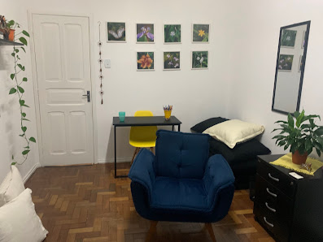
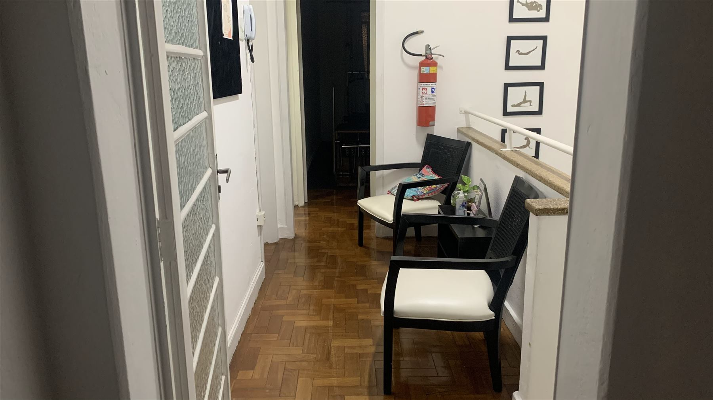
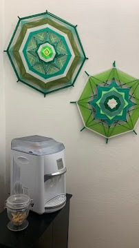

Um espaço para conversar
As questões de cada pessoa podem ser compreendidas com calma, em uma conversa sobre o momento vivido.
Um espaco de escuta e cuidado
Cuidar da sua saúde emocional é um gesto de presença. Na terapia, você encontra acolhimento, clareza e ferramentas para construir uma vida mais alinhada ao que importa.

Um espaço para acolher
Um ambiente preparado para escuta e cuidado.
Sobre mim
Sou Gilmara Cardozo Soares. Acredito em uma psicoterapia que respeita o seu tempo, acolhe a sua história e transforma reflexão em movimento.
Meu trabalho é construir, ao seu lado, um lugar seguro para nomear o que sente e experimentar novas possibilidades de estar no mundo.
Vamos conversarA clínica
Detalhes que ajudam o corpo a entender: aqui existe tempo, privacidade e espaço para respirar.
Conhecer o atendimento

Como funciona
Sem fórmulas prontas. A terapia é uma construção feita em parceria, com pequenos passos e descobertas reais.
Na primeira conversa, conhecemos sua história e o que trouxe você até aqui. Não é preciso preparar nada.
Juntos, observamos padrões, necessidades e recursos que podem apoiar mudanças mais gentis.
Você leva da terapia ferramentas para seguir fazendo escolhas alinhadas à sua vida.
Atendimentos
Localizaçao
Av. Luiz Perry, nº 220
Juiz de Fora/MG
O processo terapêutico é seu. Por isso, cada encontro é construído com escuta, transparência e respeito pelas suas escolhas.
Agendar primeira conversaPróximo passo
Se sentiu que é hora, me escreva. A primeira conversa é um jeito simples de nos conhecermos.
Quero agendar uma conversa